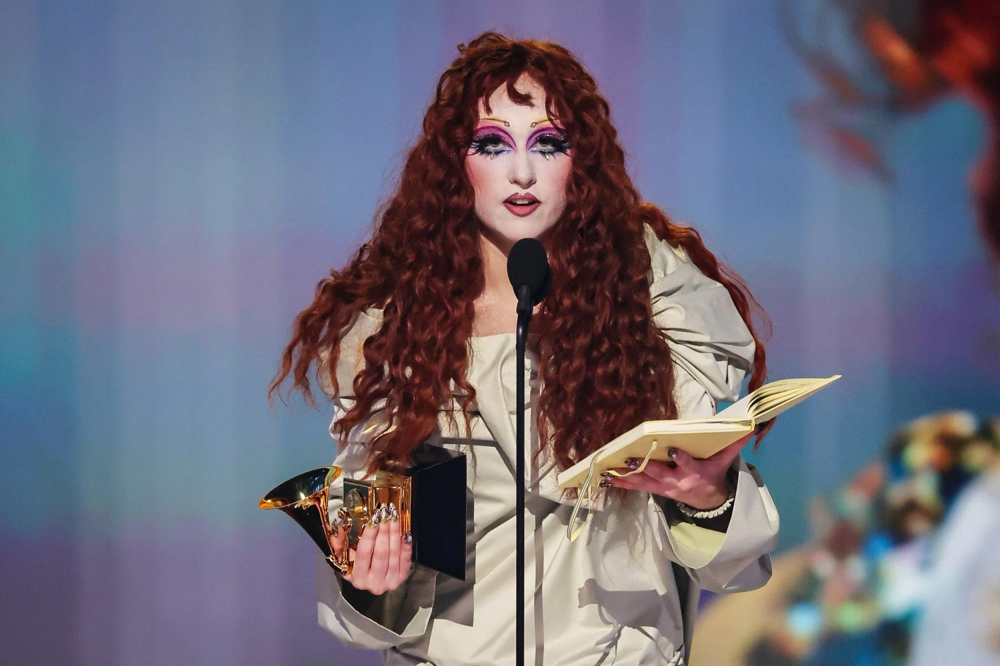
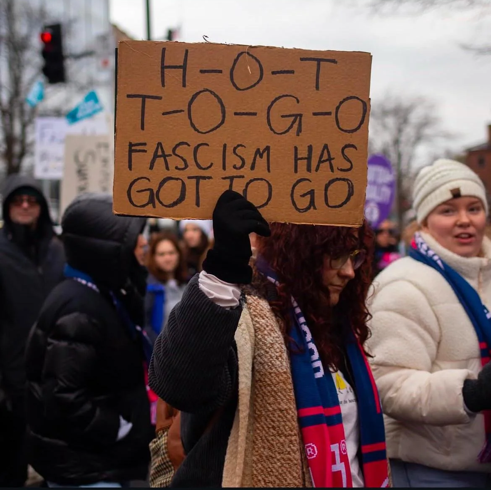

queer pop icon
a super star in the making
a visionary performer
lesbian pop renaissance
rewriting the rules of lovelorn pop
unapologetic authenticity



In 2024, Roan gave a guest lecture at Harvard Medical School. When searching for Roan's name on Google, users are prompted with "Did you mean: your favorite artist's favorite artist", which references a viral clip of Roan introducing herself on stage at the Coachella Music Festival. This was inspired by Roan's favorite drag performer and now drag mother Sasha Colby. Roan joked the search term was caused by a "random twink who works at Google" and stated that she modified Colby's phrase as she hoped Colby would one day watch and recognize her. The two met in July 2024 while performing at Capitol Hill Block Party, where Colby asked Roan to join the House of Colby as her daughter.
In June 2024, Roan revealed she had declined an invitation from the White House to perform for that year's Pride celebration. During the Governors Ball Music Festival, Roan stated, "we want liberty, justice and freedom for all. When you do that, that's when I'll come", mentioning the Israeli-Palestinian conflict and transgender rights. Roan later revealed that she considered attending, but instead of performing music, she would recite poetry by Palestinian women. Roan said that her publicist was supportive of the idea, but warned her that doing so at the White House would likely compromise her and her family's safety, which is why she decided to decline the invitation instead.
In August 2024, the Kamala Harris 2024 presidential campaign released a baseball cap with the words "Harris Walz" in a similar style to Roan's "Midwest Princess" merchandise baseball cap. In response, Roan tweeted "is this real". Roan refused to endorse the Harris campaign but confirmed she would vote for Harris, stating that "endorsing and voting are completely different." Explaining the decision, she said, "Fuck Trump for fucking real, but fuck some of the shit that has gone down in the Democratic Party that has failed people like me and you - and, more so, Palestine, and more so, every marginalized community in the world." Roan launched the Midwest Princess Project in October 2025. A nonprofit organization, it aims to uplift trans youth and to protect other LGBTQ+ communities.